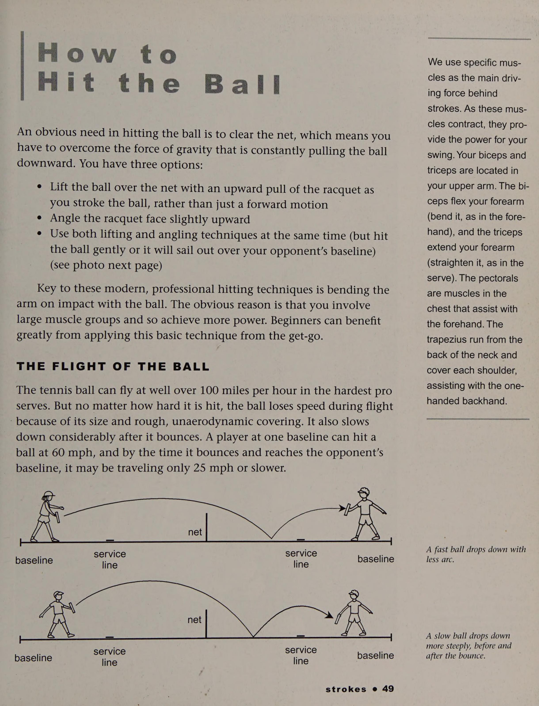
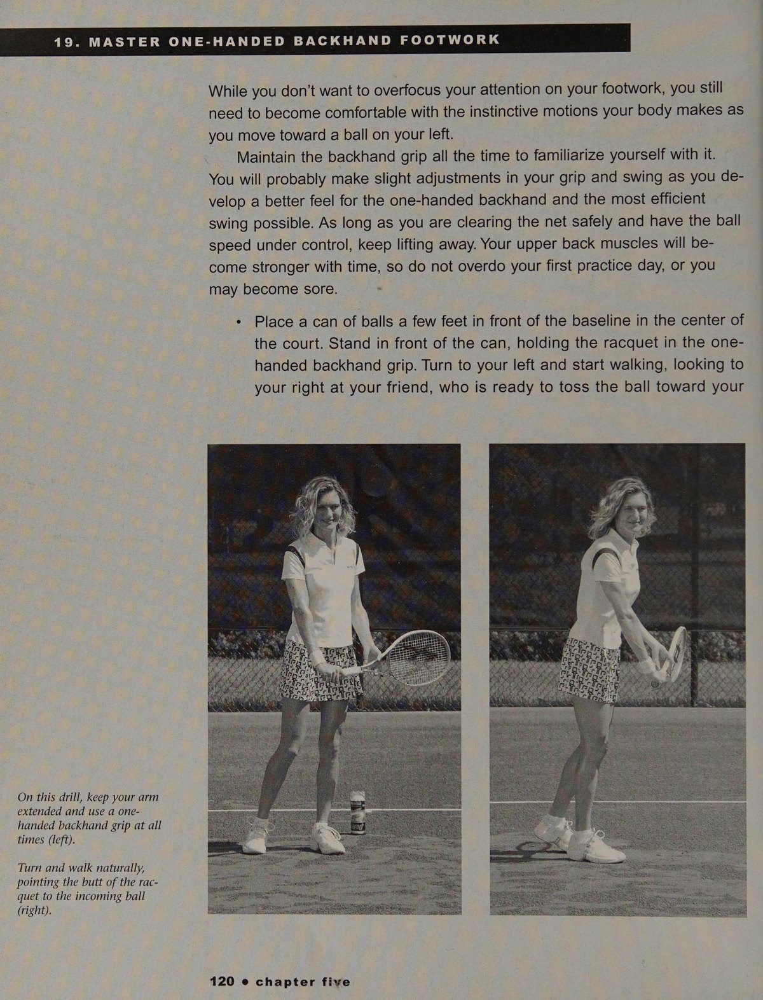
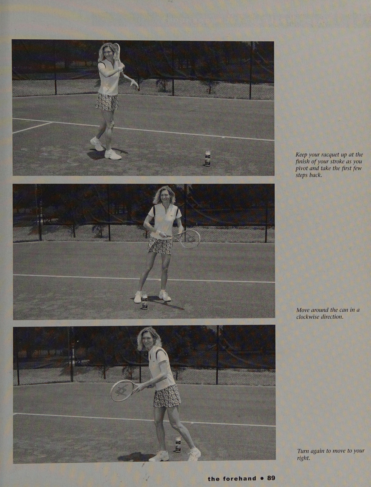
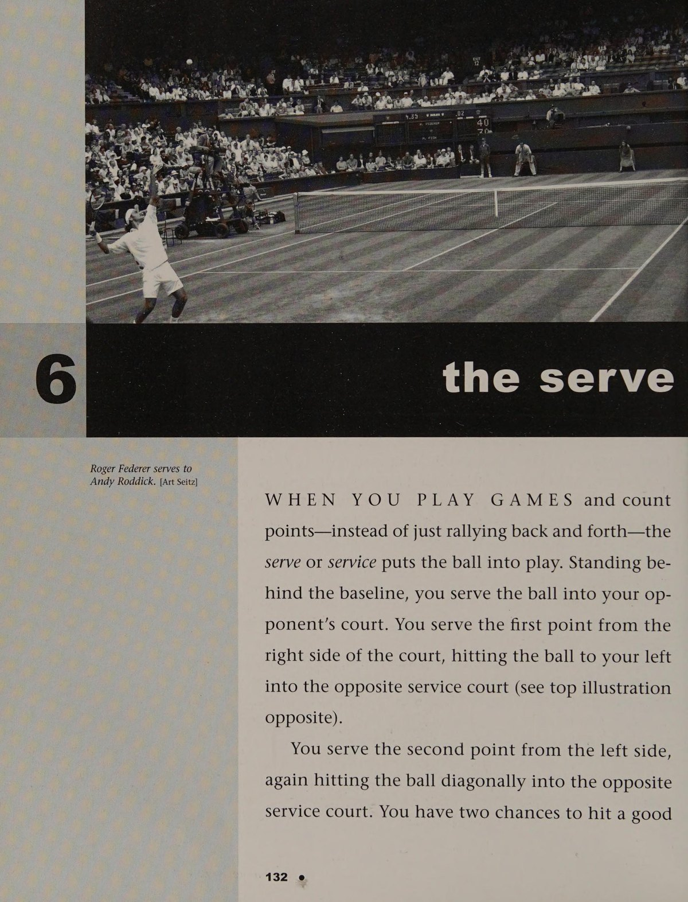
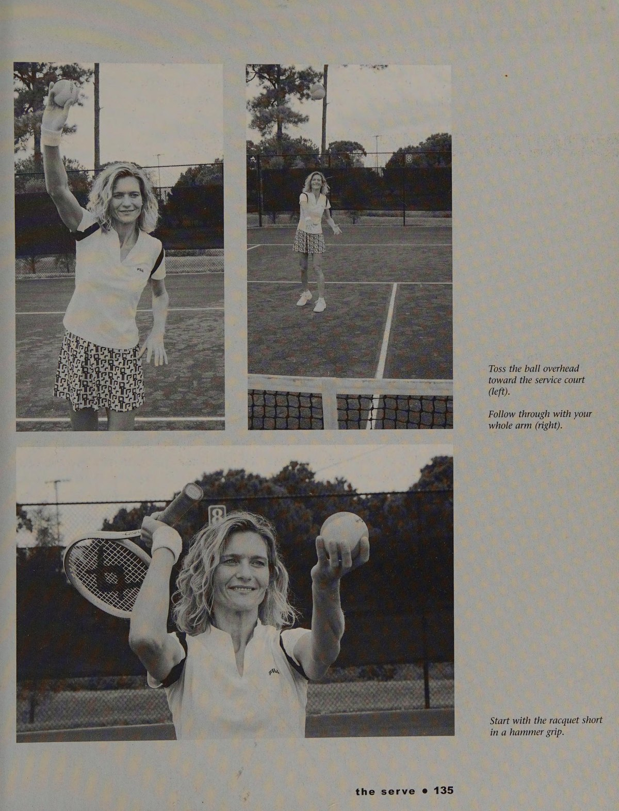
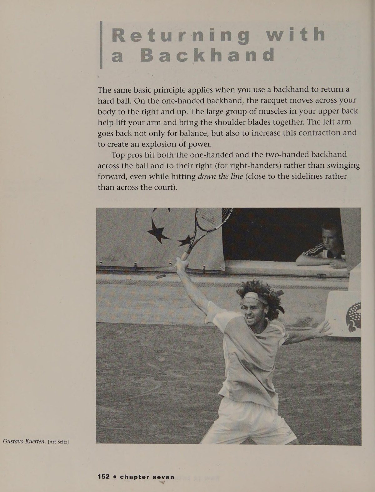
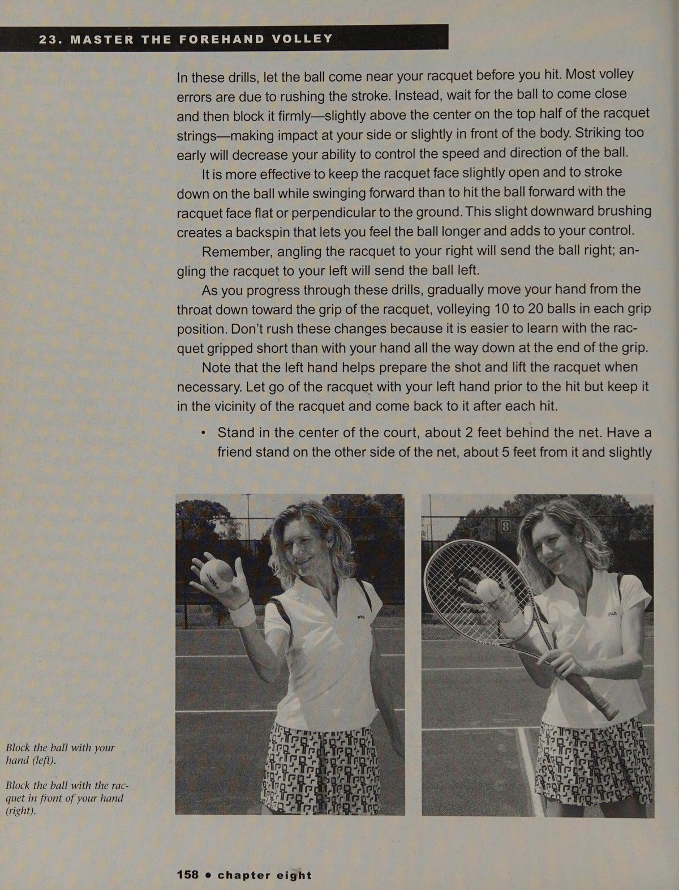
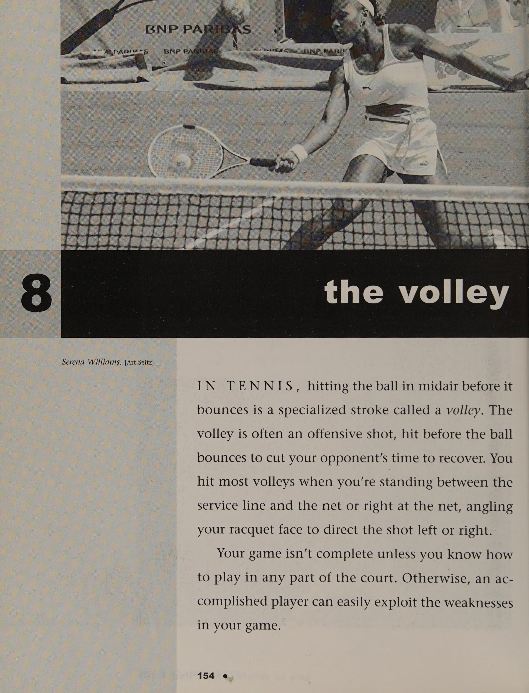

Phần I: Đập Tan Ngộ Nhận & Triết Lý Đơn Giản Hóa Quần Vợt Hiện Đại
Khám phá phương pháp MTM chấn động thế giới của Oscar Wegner, vạch trần các giáo điều cổ điển sai lầm và làm chủ cảm giác tiếp xúc bóng tự nhiên
1. Giới Thiệu & Chương 1: Đập Tan Các Giáo Điều Sai Lầm Cổ Điển
Trong suốt nhiều thập kỷ, hàng triệu người yêu quần vợt trên khắp thế giới đã bị cản trở bởi những phương pháp giảng dạy cổ điển cứng nhắc và lỗi thời.
Người ta bảo bạn phải "xoay nghiêng người vuông góc sang một bên", "bước chân trước vào bóng", "kéo thẳng vợt ra sau thật sớm" và "đánh bóng thẳng xuyên tâm qua lưới".
Nhưng khi bạn quan sát các huyền thoại đương đại như Roger Federer, Rafael Nadal hay chị em nhà Williams thi đấu, bạn sẽ thấy họ hầu như không bao giờ làm như vậy.
Họ đối mặt trực diện với lưới trong tư thế mở (Open Stance), họ nhảy bật cả hai chân lên khỏi mặt đất khi tiếp xúc bóng, và họ quét vung cây vợt cuộn vút lên trên đỉnh đầu tạo độ xoáy topspin cực đại.
Phương pháp Modern Tennis Methodology (MTM) của tôi được xây dựng dựa trên việc quan sát trực tiếp các nhà vô địch thi đấu thực chiến và mô phỏng chính xác những phản xạ tự nhiên của cơ thể con người.
Ngộ nhận thứ nhất: "Bạn phải bước chân vào bóng". Thực tế là trong quần vợt đỉnh cao tốc độ cao, bạn không có thời gian để bước chân thẳng vào bóng. Đứng ở tư thế mở hoặc bán mở cho phép hông của bạn xoay tự do và truyền toàn bộ lực từ mặt đất qua thân trên vào cây vợt.
Ngộ nhận thứ hai: "Bạn phải đánh quả bóng phẳng về phía trước". Thực tế là một cú đánh phẳng có biên độ sai số cực kỳ nhỏ và rất dễ rúc lưới hoặc bay ra ngoài. Bạn phải dùng mặt vợt nâng và cuộn quả bóng lên cao qua mép lưới để lực xoáy topspin kéo bóng cắm sâu vào sân.

2. Chương 2 & 3: Dòng Chảy Tự Nhiên & Khái Niệm Đỡ Bóng Bằng Lòng Bàn Tay
Bí quyết cốt lõi để chơi quần vợt giỏi chỉ sau hai giờ là sự đơn giản hóa tuyệt đối: hãy coi cây vợt như sự nối dài tự nhiên của cánh tay và lòng bàn tay bạn.
Khi một đứa trẻ ném hoặc bắt một quả bóng, chúng không cần phải nhớ hàng chục quy tắc cơ học phức tạp. Bộ não con người là một cỗ máy tính toán quỹ đạo phi thường.
Quy trình ba bước tự nhiên của MTM:
Bước một: "Tìm quả bóng" (Find the Ball). Đừng suy nghĩ về việc lấy đà thế nào. Hãy di chuyển cơ thể và đưa mặt vợt về phía sau quả bóng trong tầm mắt.
Bước hai: "Cảm nhận quả bóng" (Feel the Ball). Khi tiếp xúc, hãy tập trung vào cảm giác quả bóng lún sâu vào mặt dây vợt giống như lòng bàn tay bạn đang hứng trọn quả bóng. Mặt vợt hơi úp nhẹ hoặc dựng thẳng vuông góc với mặt sân.
Bước ba: "Nâng và cuộn bóng" (Lift and Roll). Đừng cố gắng đẩy quả bóng đi thật mạnh bằng cơ bắp tay. Hãy để mặt vợt dẫn đường cho quả bóng bay bổng lên cao qua mép lưới từ một đến hai mét, sau đó vung hoàn tất chuyển động vòng qua vai một cách mượt mà.
Khi bạn loại bỏ mọi sự căng thẳng cơ bắp và ngừng lo sợ đánh hỏng, những cú đánh tự nhiên và đẹp mắt nhất sẽ tự động tuôn trào.

Phần II: Cú Thuận Tay 1-2-3-4 & Cú Trái Tay Đòn Bẩy Tự Nhiên
Phương pháp rèn luyện cú thuận tay tư thế mở, kỹ thuật gạt nước Windshield Wiper tạo xoáy và giải mã cú trái tay hai tay vs một tay
3. Chương 4: Cú Thuận Tay MTM 1-2-3-4 & Kỹ Thuật Cần Gạt Nước (Windshield Wiper)
Cú thuận tay (forehand) là cú đánh tự nhiên nhất trong quần vợt vì lòng bàn tay thuận của bạn đối diện trực tiếp với hướng đánh.
Trong phương pháp MTM, tôi chia cú thuận tay thành chuỗi nhịp 1-2-3-4 vô cùng trực quan:
Nhịp một: Xoay vai và đưa mặt vợt ra sau bóng. Không cần vòng vợt quá cao hay quá phức tạp; mặt vợt chỉ cần hạ xuống ngang hoặc thấp hơn tầm nảy của quả bóng một chút.
Nhịp hai: Căn chỉnh vị trí chân ở tư thế mở (Open Stance). Hai chân đứng dang rộng ngang vai, cơ thể hướng về phía trước sân. Điều này giúp bạn có thể quan sát quả bóng bằng cả hai mắt thay vì bị che khuất tầm nhìn như khi đứng nghiêng người.
Nhịp ba: Tiếp xúc bóng ở phía trước cơ thể. Hãy cảm nhận bạn đang "đỡ lấy" quả bóng trên mặt dây vợt và lập tức nâng quả bóng lên cao.
Nhịp bốn: Kết thúc theo kiểu cần gạt nước (The Windshield Wiper Finish). Cây vợt không vung dài thẳng ra trước rồi mới vòng qua vai, mà quét chéo vút qua thân người giống như lưỡi cần gạt nước trên kính chắn gió ô tô.
Chuyển động cần gạt nước này cho phép cẳng tay và cổ tay xoay tự nhiên quanh trục, tạo ra hàng ngàn vòng quay topspin mỗi phút giúp quả bóng lao vút qua lưới rồi cắm phập xuống sát vạch cuối sân một cách kỳ diệu.

4. Chương 5: Cú Trái Tay Hiện Đại — Hai Tay Uy Lực & Một Tay Điêu Luyện
Cú trái tay (backhand) thường bị coi là điểm yếu của đa số người chơi phong trào chỉ vì họ cố gắng sao chép những chuyển động gượng gạo.
Đối với cú trái tay hai tay (The Two-Handed Backhand):
Bí quyết MTM đơn giản nhất để làm chủ cú trái tay hai tay là: hãy coi nó như một cú thuận tay của tay không thuận.
Nếu bạn thuận tay phải, tay trái sẽ đóng vai trò động cơ phát lực chính. Tay phải chỉ giữ nhẹ cán vợt để tạo điểm tựa và dẫn hướng. Khi quả bóng bay tới, hãy xoay vai đưa vợt ra sau, hạ thấp đầu vợt xuống dưới bóng và dùng tay trái nâng vút quả bóng lên qua lưới.
Chính kỹ thuật này đã biến những tay vợt trẻ tuổi có thể hình nhỏ nhắn thành những cỗ máy tấn công trái tay sấm sét như Maria Sharapova hay chị em nhà Williams.
Đối với cú trái tay một tay (The One-Handed Backhand):
Xoay vai sâu hơn một chút để lưng hơi quay về phía lưới, hạ đầu vợt sâu dưới quả bóng và bung mở lồng ngực khi vung lên đón bóng ở phía trước đầu gối trước. Cánh tay không thuận vung ngược ra sau lưng để cân bằng đối trọng cho cơ thể.
Đối với cú chém trái tay (The Slice):
Bắt đầu với đầu vợt đặt cao ngang tai, trượt mặt vợt đi xuống và lướt dưới đáy quả bóng theo quỹ đạo từ cao xuống thấp rồi ra trước. Cú đánh này mang lại độ xoáy ngược hiểm hóc và giúp bạn hóa giải mọi đường bóng tấn công sâu của đối thủ.



Phần III: Cú Giao Bóng Tự Nhiên, Trả Giao Bóng Tốc Độ & Kỹ Thuật Lưới
Chuyển động ném bóng phóng khoáng, nghệ thuật hóa giải đường bóng sấm sét và phản xạ bắt vô-lê đơn giản hóa tuyệt đối
5. Chương 6: Cú Giao Bóng (The Serve) — Chuyển Động Ném Bóng Tự Nhiên
Cú giao bóng thường bị làm cho trở nên quá phức tạp bởi hàng tá chi tiết cơ học vụn vặt khiến người chơi bị tê liệt tư duy.
Trong phương pháp MTM, cú giao bóng đơn giản chính là hành động ném một quả bóng hoặc một cây gậy lên cao về phía trước.
Nếu bạn có thể ném một quả bóng chày hoặc một hòn sỏi đi xa, bạn hoàn toàn có thể giao bóng xuất sắc.
Chuỗi chuyển động bản năng:
Tung quả bóng lên cao ở phía trước thân người một cách êm ái. Đồng thời đưa cây vợt rơi xuống sau lưng trong một chuyển động thả lỏng hoàn toàn như thể bạn chuẩn bị ném cây vợt lên trời.
Nhún gối và phóng toàn bộ thân người vươn cao lên không trung để đón bóng tại điểm cao nhất của tầm với, giống như hình ảnh của Andy Roddick khi anh lập kỷ lục giao bóng nhanh nhất thế giới.
Mặt vợt quét miết vào quả bóng và xoay sấp cẳng tay tự nhiên khi tiếp xúc. Trọng lượng cơ thể tự động rơi vào trong sân sau khi chạm bóng.
Đừng bao giờ cố gắng điều khiển từng ngón tay hay gập cổ tay gượng ép. Hãy để đòn bẩy cánh tay hoạt động như một chiếc roi da dẻo dai phóng thích sức mạnh từ đôi chân và cơ hông.



6. Chương 7: Trả Giao Bóng — Hóa Giải Những Cú Đánh Tốc Độ Cao
Khi đối thủ tung ra một cú giao bóng mạnh mẽ bay với tốc độ một trăm dặm một giờ, bạn chỉ có chưa đầy nửa giây để phản xạ. Nếu bạn cố gắng mở vợt ra sau lưng để lấy đà, bạn chắc chắn sẽ thất bại.
Nguyên lý trả bóng của MTM: "Chặn bóng ngay khi vừa nảy lên" (Take the Ball on the Rise).
Hãy đứng thấp trọng tâm, hai tay cầm vợt ở phía trước ngực.
Ngay khi bóng nảy lên khỏi mặt sân, không mở vợt ra sau mà chỉ cần xoay nhẹ vai đưa mặt vợt ra chặn quả bóng. Hãy sử dụng chính lực bóng dữ dội của đối phương để đẩy bóng ngược trở lại.
Bằng cách tiếp xúc bóng sớm ngay tại đỉnh nảy đầu tiên, bạn sẽ cướp đi toàn bộ thời gian hồi phục của đối thủ và biến một tình huống phòng ngự hiểm nghèo thành một pha phản công ghi điểm ngoạn mục.

7. Chương 8 & 9: Làm Chủ Lưới — Vô-Lê, Cú Lốp & Đập Bóng Tấn Công
Quan niệm truyền thống cho rằng khi đánh vô-lê bạn phải bước chân bắt chéo và chém mạnh mặt vợt xuống dưới. Điều này hoàn toàn sai lầm và thường khiến bóng rúc thẳng vào chân lưới.
Kỹ thuật vô-lê MTM đơn giản chỉ là việc: "Đưa mặt vợt ra chặn và hứng bóng" (Catch and Guide).
Khi đứng trên lưới, hãy giữ mặt vợt luôn ở phía trước mắt bạn. Không có bất kỳ động tác lấy đà nào ở phía sau lưng.
Khi quả bóng bay tới, bạn chỉ cần đưa mặt vợt vững chắc ra đỡ lấy quả bóng, hơi nghiêng nhẹ mặt vợt lên trên để bóng tự động bật qua lưới. Chân di chuyển theo bản năng để giữ thăng bằng chứ không cần ép buộc theo các góc độ cứng nhắc.
Đối với cú lốp bóng (The Lob): khi đối phương áp sát lưới, hãy ngụy trang như một cú đánh cuối sân bình thường nhưng mở ngửa mặt vợt nâng bóng bay cao vồng qua tầm với của họ về góc sân trống.
Đối với cú smash (đập bóng trên không): chỉ tay không cầm vợt lên trời để khóa mục tiêu, di chuyển chân lùi đón bóng ở phía trước trán và thực hiện một cú ném vợt đập mạnh xuống sân đối phương với sự tự tin tuyệt đối.


Phần IV: Chiến Thuật Thực Chiến, Xử Lý Sự Cố & Quần Vợt Trọn Đời
Chiến lược thi đấu đơn & đôi đơn giản hóa, cẩm nang tự sửa lỗi trên sân đấu và phương pháp rèn luyện bản năng MTM suốt cuộc đời
8. Chương 10, 11 & 12: Chiến Lược Thi Đấu Đơn & Đôi Thông Minh
Chiến thuật quần vợt không cần phải là một mớ sơ đồ phức tạp khiến bạn hoa mắt chóng mặt khi đang vận động mồ hôi ướt đẫm.
Trong thi đấu đơn (Singles Strategy):
Quy tắc số một là: hãy giữ cho quả bóng luôn bay sâu vào giữa sân đối thủ. Khi bạn đánh bóng sâu vào tâm sân, bạn tước đoạt toàn bộ các góc mở của đối phương và buộc họ phải đánh trả một cách an toàn.
Chỉ tấn công ra các góc sân hiểm hóc khi bạn nhận được một quả bóng ngắn nảy lơ lửng bên trong vạch phát bóng. Khi đó, hãy bước chân vào sân và dùng cú vung gạt nước topspin kết thúc điểm số.
Trong thi đấu đôi (Doubles Strategy):
Chìa khóa then chốt của đánh đôi là sự phối hợp nhịp nhàng và thống nhất giữa hai người chơi.
Quy tắc vàng: luôn khóa chặt khu vực giữa sân (Down the Middle). Hầu hết các điểm số bị thua trong đánh đôi xảy ra khi hai người nhường bóng cho nhau ở khoảng trống trung tâm.
Khi ở trên lưới, hãy nhắm quả bóng vô-lê thẳng vào chân của người chơi đứng lưới đối phương. Đừng cố gắng đánh một cú bóng hiểm ra sát vạch biên khi bạn hoàn toàn có thể kết liễu điểm số bằng một cú đánh thẳng vào điểm yếu cơ thể đối thủ.
9. Phụ Lục 1: Cẩm Nang Xử Lý Sự Cố Ngay Trên Sân (Troubleshooting)
Khi bạn thi đấu và cảm thấy cú đánh của mình bị trục trặc, đừng hoảng loạn hay cố gắng sửa đổi toàn bộ kỹ thuật. Hãy sử dụng bảng tra cứu xử lý sự cố nhanh của MTM:
Sự cố một: Quả bóng liên tục rúc vào lưới.
Nguyên nhân: Bạn đang cố gắng đánh bóng đi thẳng hoặc mặt vợt bị úp quá sớm trước khi chạm bóng.
Cách sửa: Hãy hạ đầu vợt sâu hơn nữa xuống dưới quả bóng và nhắm nâng quả bóng bay bổng cao hơn mép lưới từ một đến hai mét. Hãy nhớ rằng lưới là chướng ngại vật cố định, bạn phải vượt qua nó trước khi nghĩ đến việc bóng rơi vào đâu.
Sự cố hai: Quả bóng bay bổng ra ngoài vạch cuối sân.
Nguyên nhân: Mặt vợt bị ngửa lên trời hoặc bạn đánh bóng quá muộn ở phía sau thân người.
Cách sửa: Đưa mặt vợt ra đón bóng ở phía trước hông, giữ mặt vợt hơi úp nhẹ khi tiếp xúc và vung nhanh cú cần gạt nước topspin để lực xoáy kéo quả bóng cắm xuống sân.
Sự cố ba: Cú đánh trúng vào cạnh và khung vợt (Shank).
Nguyên nhân: Đầu và mắt bạn đã quay đi nhìn về phía sân đối phương trước khi bóng tiếp xúc vào mặt dây.
Cách sửa: Hãy giữ đầu và ánh mắt cố định tại điểm tiếp xúc thêm một phần mười giây sau khi quả bóng đã bay đi. Cảm nhận trọn vẹn điểm ngọt trung tâm mặt vợt.
10. Chương 13: Chơi Quần Vợt Với Phương Pháp MTM — Môn Thể Thao Cho Cả Cuộc Đời
Phương pháp Modern Tennis Methodology không chỉ là kỹ thuật đánh bóng, mà là một triết lý giải phóng tinh thần con người.
Mục tiêu tối thượng của tôi khi sáng tạo ra MTM là giúp bất kỳ ai — từ một đứa trẻ sáu tuổi cho đến một cụ già bảy mươi tuổi — đều có thể cầm cây vợt lên và đánh qua lại một cách hứng khởi chỉ sau hai giờ đồng hồ.
Quần vợt không phải là một bài kiểm tra quân sự với những động tác gò bó khô cứng. Quần vợt là một vũ điệu của sự tự do, niềm vui và bản năng tự nhiên.
Khi bạn tin tưởng vào đôi mắt, đôi chân và đôi bàn tay của chính mình, bạn sẽ thấy môn thể thao này trở nên dễ dàng và quyến rũ đến nhường nào.
Hãy xách vợt ra sân với một nụ cười rạng rỡ trên môi, cảm nhận từng nhịp đập êm ái của quả bóng nỉ trên mặt dây, và tận hưởng trọn vẹn món quà tuyệt vời mà quần vợt mang lại cho sức khỏe và cuộc sống của bạn!